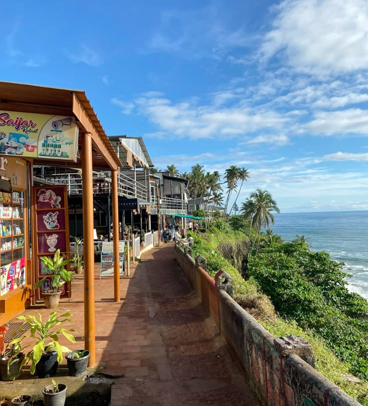

Munnar – The Land of Misty Hills
Munnar, nestled in the Western Ghats, is one of Kerala's most captivating hill stations. Known for its endless tea plantations, rolling hills, and misty landscapes, Munnar offers a refreshing escape from the bustle of city life. The region's cool climate, winding roads, and scenic viewpoints like Top Station and Echo Point make it a paradise for nature lovers and photographers. The Eravikulam National Park, home to the endangered Nilgiri Tahr, is a must-visit for wildlife enthusiasts. Tea lovers can explore the Tata Tea Museum to learn about the region's rich tea heritage. Adventure seekers can go trekking, rock climbing, or cycling through the hilly terrain. With its charming homestays and luxury resorts, Munnar is also a favorite among honeymooners. Whether you seek solitude, scenic beauty, or adventure, Munnar captures your heart with its timeless charm and breathtaking vistas.
Alleppey (Alappuzha) – The Backwater Paradise
Alleppey, often hailed as the "Venice of the East," is the heart of Kerala's iconic backwater tourism. Crisscrossed by a network of canals, lagoons, and lakes, this serene town offers an unforgettable experience through houseboat cruises on the vast Vembanad Lake. As you glide over the tranquil waters, you'll witness the beauty of lush green paddy fields, swaying coconut palms, and traditional village life unfolding along the banks. The backwaters of Alleppey are best experienced at a slow pace, letting the peace and charm of the region sink in. Apart from houseboats, the region is known for coir industries, temples, and the spectacular Nehru Trophy Snake Boat Race held annually. Whether it's a romantic getaway or a cultural escape, Alleppey promises scenic beauty, traditional flavors, and moments of pure relaxation. It's a must-visit for anyone seeking Kerala's calm, water-bound soul.
Thekkady – Where the Wild Roams Free
Thekkady is Kerala's premier wildlife destination, best known for the Periyar Wildlife Sanctuary, a sprawling protected area nestled in the Western Ghats. The sanctuary is home to elephants, tigers, wild boars, gaur, and many bird species, making it a paradise for nature and wildlife enthusiasts. Visitors can enjoy peaceful boat safaris on Periyar Lake, where animals often come to drink, offering excellent opportunities for wildlife spotting and photography. Beyond wildlife, Thekkady is famous for its fragrant spice plantations where cardamom, pepper, cinnamon, and cloves are cultivated. Spice tours allow visitors to learn about the cultivation process and enjoy the aromatic surroundings. The town also offers trekking, bamboo rafting, and cultural shows featuring traditional Kerala art forms like Kathakali and Kalaripayattu. With its blend of nature, adventure, and culture, Thekkady invites travelers to experience Kerala's wild heart in an unforgettable way.
Kochi – The Cultural Harbor
Kochi, also known as Cochin, is a vibrant city where history, culture, and modernity meet by the Arabian Sea. Known as the "Queen of the Arabian Sea," Kochi was a crucial trading port for spices and has welcomed traders and settlers from across the world, including Arabs, Portuguese, Dutch, and British. This multicultural past is evident in Fort Kochi's colonial architecture, narrow lanes, and historic sites like the Dutch Palace and Jewish Synagogue. The iconic Chinese fishing nets along the waterfront are a symbol of Kochi's rich maritime heritage. Art lovers flock to Kochi for the Kochi-Muziris Biennale, a renowned international contemporary art festival. The city also offers charming cafés, eclectic shopping, and vibrant street life. Whether exploring its historic forts or enjoying fresh seafood by the sea, Kochi captures the heart with its unique blend of tradition and cosmopolitan energy.

Varkala – The Cliffside Wonder
Varkala is a stunning coastal town famous for its unique red cliffs that dramatically rise above the Arabian Sea. Unlike other beaches in Kerala, Varkala offers a rare combination of golden sands, natural springs believed to have medicinal properties, and a vibrant yet peaceful atmosphere. The cliffside promenade is dotted with quaint cafés, shops, and Ayurvedic centers, making it a perfect blend of relaxation and wellness. Varkala Beach is ideal for swimming, sunbathing, and watching spectacular sunsets that paint the sky in fiery hues. The nearby Janardana Swami Temple, an ancient pilgrimage site, adds spiritual depth to this coastal retreat. Whether you're a solo traveler, couple, or family, Varkala's serene environment and natural beauty provide a rejuvenating escape from the ordinary, making it a must-visit destination on Kerala's coastline.
Wayanad – Nature's Untouched Canvas
Wayanad district, located in the northern part of Kerala's Western Ghats, is a lush and scenic region known for its rich biodiversity and pristine landscapes. This hill district is famous for dense forests, spice plantations, and wildlife sanctuaries, making it a haven for eco-tourism and adventure activities. Visitors can explore spectacular waterfalls like Soochipara and Meenmutty, discover ancient petroglyphs at the Edakkal Caves, and trek to the heart-shaped lake atop Chembra Peak, the highest point in Wayanad. The district's cool climate and verdant hills offer a refreshing break from city life, while local tribal communities provide a glimpse into Kerala's rich cultural heritage. Located about 70 kilometers from Kozhikode city, Wayanad is easily accessible and promises a perfect blend of nature, history, and adventure in Kerala's northern highlands.
Thrissur – Kerala's Cultural Capital in Central Kerala
Thrissur district, situated in the heart of Kerala, is renowned as the cultural capital of the state. This vibrant region is famous for its grand festivals, traditional art forms, and historic temples that showcase Kerala's rich heritage. The city of Thrissur hosts the spectacular Thrissur Pooram festival, one of India's most colorful and electrifying temple festivals, attracting thousands of visitors each year. Apart from the festival, the district boasts significant landmarks like the Vadakkumnathan Temple, the Shakthan Thampuran Palace, and the Kerala Kalamandalam, a premier institution for classical arts. Thrissur is also known for its thriving handloom and handicraft industries. Located approximately 300 kilometers from Kochi and well-connected by road and rail, Thrissur offers travelers a deep dive into Kerala's spiritual and cultural traditions, making it a must-visit destination for those seeking authentic experiences in central Kerala.
Kovalam – Kerala's Iconic Beach Paradise
Kovalam is one of Kerala's most famous beach destinations, celebrated for its crescent-shaped golden sands and calm, turquoise waters. It is renowned for its three distinct beaches—Lighthouse Beach, Hawah Beach, and Samudra Beach—each offering a unique experience for visitors. The iconic Kovalam Lighthouse stands tall as a landmark, providing panoramic views of the Arabian Sea and surrounding coastline. Kovalam is perfect for sunbathing, swimming, and water sports like surfing and parasailing. The beach town also offers a vibrant seaside promenade lined with cafes, shacks, and shops selling traditional crafts and seafood delicacies. Wellness seekers can enjoy Ayurvedic massages and treatments available at numerous resorts and centers. Just a short drive from Thiruvananthapuram city, Kovalam combines natural beauty, leisure, and cultural charm, making it a must-visit spot for travelers seeking both relaxation and adventure on Kerala's coast.
Kumarakom – The Serene Backwater Retreat
Kumarakom, situated on the banks of Vembanad Lake, is a tranquil backwater village known for its stunning natural beauty and peaceful ambiance. This picturesque destination offers visitors a chance to unwind amid lush greenery, calm waters, and a rich variety of birdlife, including the famous migratory Siberian cranes at the Kumarakom Bird Sanctuary. Houseboat cruises here provide an intimate experience of Kerala's waterways, gliding past quaint villages, coconut groves, and rice paddies. Kumarakom is also renowned for its Ayurvedic resorts, where travelers can indulge in rejuvenating spa treatments and wellness therapies. Its close proximity to Kochi makes it an accessible escape from the city's hustle. Whether you're seeking relaxation, nature exploration, or cultural experiences, Kumarakom's serene environment and scenic beauty make it a perfect destination to connect with Kerala's soul.
Sabarimala – The Spiritual Summit of Devotion
Sabarimala is one of the most revered pilgrimage destinations in Kerala, nestled deep in the Western Ghats amidst dense forests and rugged hills. Dedicated to Lord Ayyappa, the temple attracts millions of devotees annually, especially during the Mandalam season (November to January). The pilgrimage is known for its strict observances, including 41 days of fasting and austerity, symbolizing devotion and self-discipline. The challenging trek to the temple, surrounded by rich flora and fauna, adds a spiritual dimension to the journey, offering pilgrims moments of reflection and connection with nature. The iconic 'Makara Jyothi' sighting is a highlight of the pilgrimage, drawing crowds from across India. Though a demanding spiritual experience, Sabarimala is a powerful testament to Kerala's deep-rooted religious traditions and community spirit, making it a unique destination for faith travelers and seekers of inner peace.